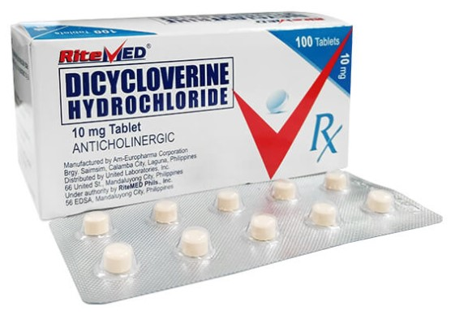
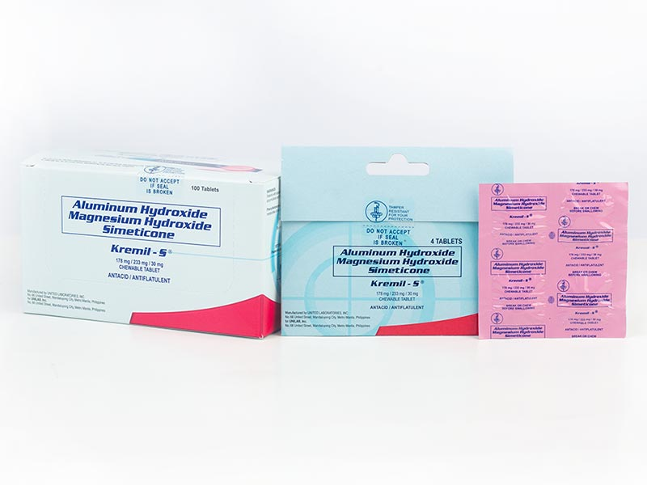
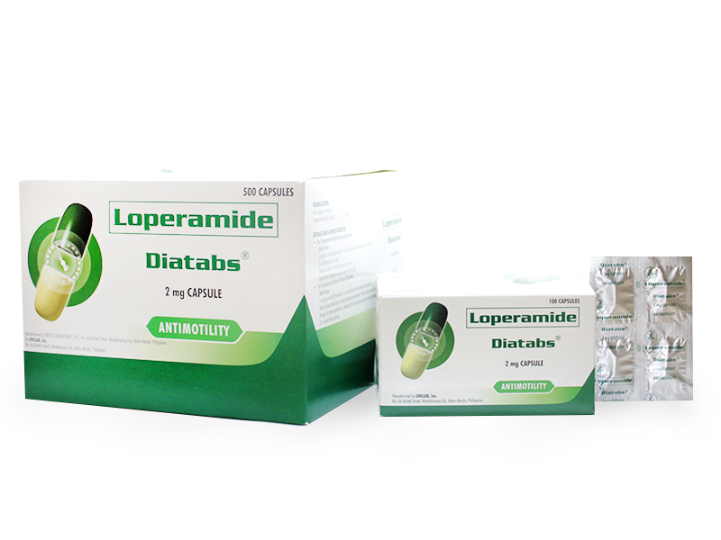
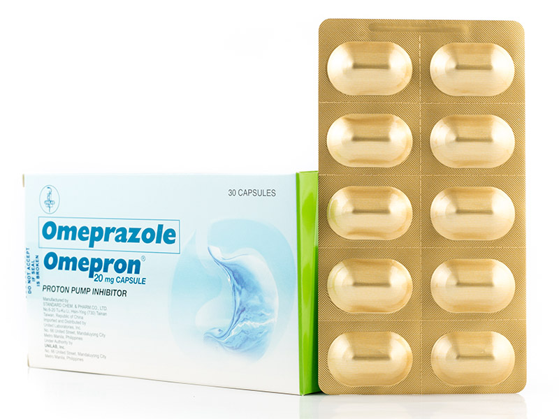

BUSCOPAN
Description
Buscopan relieves painful stomach cramps, including those linked with irritable bowel syndrome (IBS). It can also help bladder cramps and period pain. Buscopan contains the active ingredient hyoscine butylbromide.
Guide
Each Buscopan tablet contains 10mg of hyoscine butylbromide. Buscopan tablets are all the same strength whether you get them on prescription or whether you buy them as Buscopan Cramps or Buscopan IBS Relief.
The usual dose of Buscopan for stomach cramps (or cramping pain) in adults and children aged 12 years and over is 2 tablets, taken 4 times a day.
For children aged 6 to 11 years, the usual dose is 1 tablet, taken 3 times a day.
The usual dose of Buscopan for symptoms of irritable bowel syndrome (IBS) diagnosed by a doctor in adults and children aged 12 years and over is 1 tablet, taken 3 times a day. You can increase this to 2 tablets, taken 4 times a day if needed.

DICYCLOVERINE
Description
Dicycloverine hydrochloride Tablets work by relaxing the muscles in your stomach and gut (intestine). It stops sudden muscle contractions (spasms). In doing this, it relieves cramps, pain, bloating, wind and discomfort.
Guide
The usual adult dose of dicycloverine is one 10 mg tablet, or one 5 ml spoonful of liquid medicine, three times a day. If dicycloverine has been prescribed for you by a doctor, your dose may be different to this, in which case take it exactly as your doctor tells you to. Swallow the tablets with a drink of water.

KREMIL-S
Description
Kremil-S Tablet is for milder symptoms of hyperacidity/acidity, and it also relieves gassiness. It neutralizes stomach acid in as fast as 5 minutes and relief lasts up to 2 hours. Kremil-S Advance is treatment for more severe symptoms of hyperacidity and heartburn.
Guide
Kremil-S Tablet
Adults: Take 1 to 2 tablets - after meals and at bedtime, or as prescribed by a doctor. Maximum dose of 8 tablets per day.
Kremil-S Advance
Adults and Children 12 years and older: Take 1 tablet as needed, with a maximum of 2 tablets every 24 hours, or as directed by a doctor. Maximum dose of 2 tablets per day.
Kremil-S Cool Relief
Adults and Children 12 years and older: Take 10 to 20 mL (1-2 sachets) after meals and before bedtime, up to four times a day.
Children 6 to 11 years old: Take 5 to 10 mL (1 sachet) after meals and before bedtime.

DIATABS
Description
This medicine contains loperamide, an antidiarrheal agent which slows intestinal movement and reduced fluid and salt loss in the intestines, resulting in improved stool consistency.
Guide
For Symptomatic Relief of Acute Diarrhea: Adult Dose: Take 2 capsules initially followed by 1 capsule after each loose bowel movement. Or, as directed by a doctor. Maximum dose is 16 mg (8 capsules) per day. Discontinue if there is no improvement after 2 days.

OMEPRON
Description
This medicine contains omeprazole which works by decreasing the amount of acid produced in the stomach. Omeprazole is used for the short-term treatment and symptomatic relief of heartburn that occurs two or more days per week (frequent heartburn).
Guide
Adults—20 milligrams (mg) once a day before a meal. Your doctor may want you to take omeprazole for more than 8 weeks for certain conditions. Children 1 year of age and older—Dose is based on body weight and must be determined by your doctor. The dose is usually 5 to 20 mg once a day before a meal.